01
Close fit
Ashwing at the Window
A new scene for the loved Ashwing keeper: intimate, slightly uncanny companionship rather than a spectacle of necromancy.
Reviewed 10 November: thirteen accepted paintings; Night Embassy held outside the reference library. Characters, creatures, useful magic, crafted equipment, a larger city and powerful spells.
The newer favourites meet older touchstones, especially Cinderfall. Each piece has a stable number and a short intention note. Accepted paintings are visual references; detailed world rules remain open. Night Embassy is not selected.
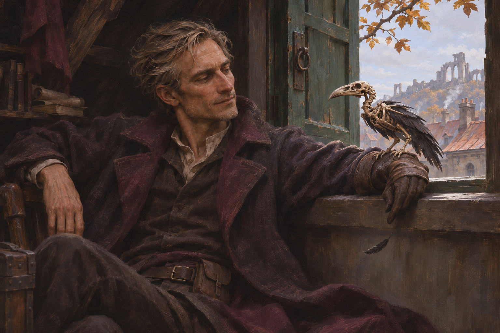
01 Ashwing at the Window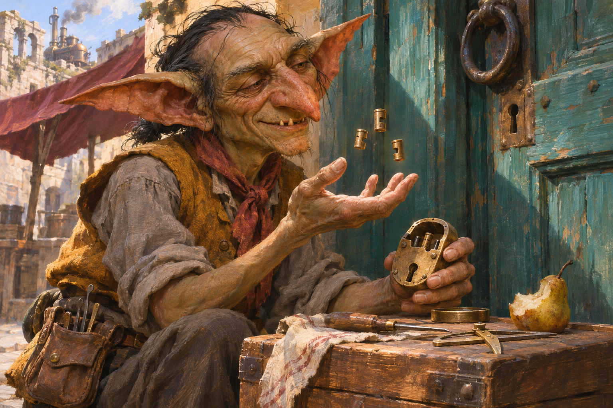
02 Copper Street Locksmith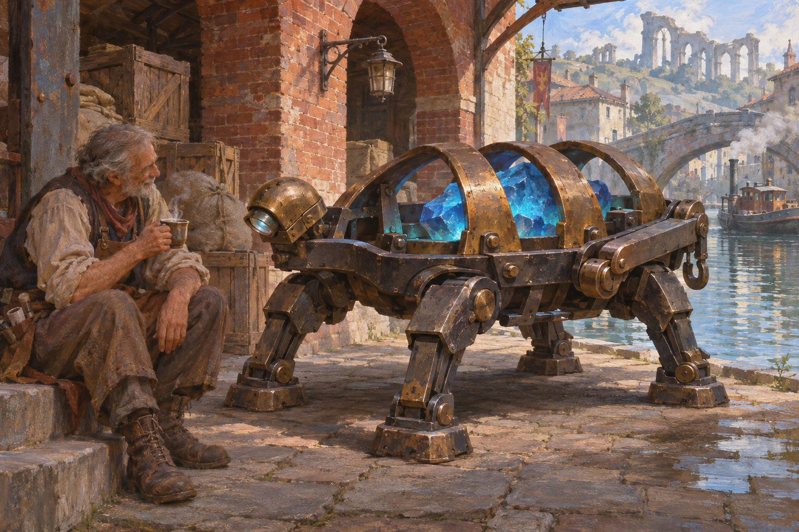
03 Engine at Rest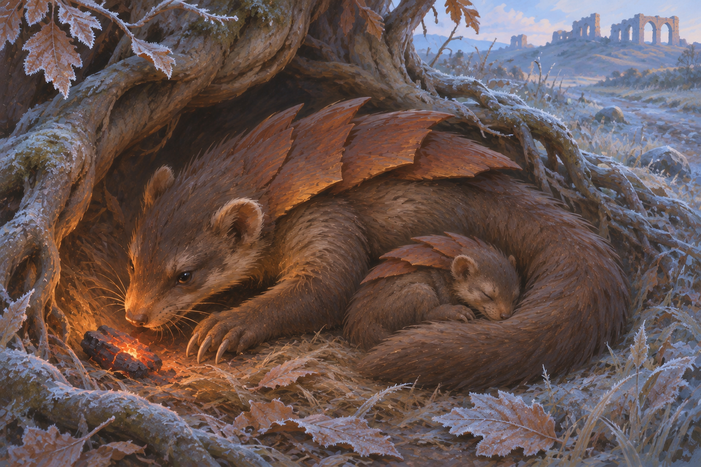
04 A Coalback’s First Frost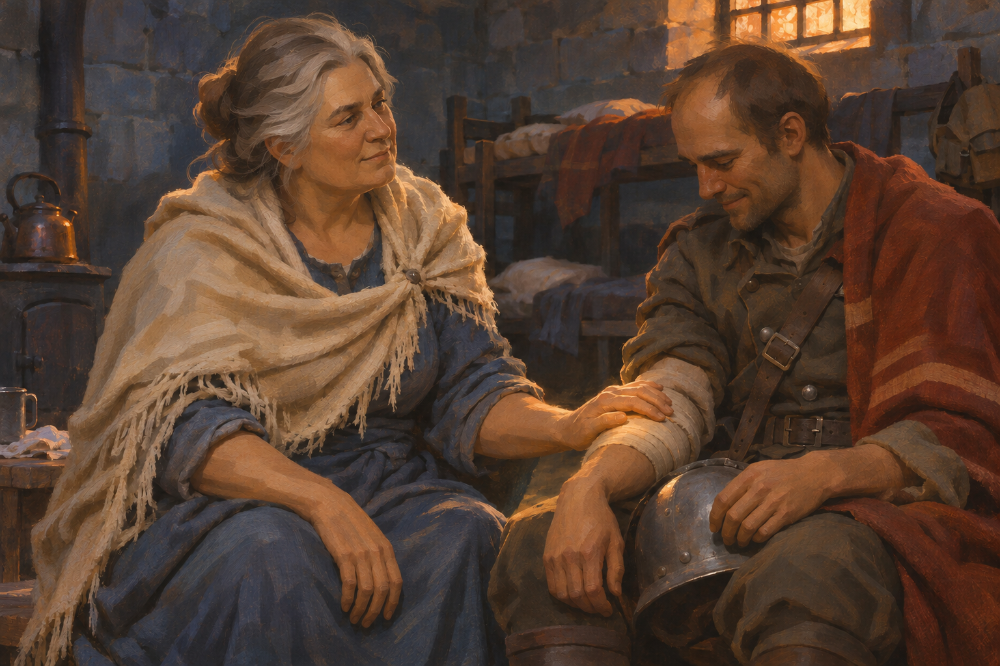
05 Last Light in the Barracks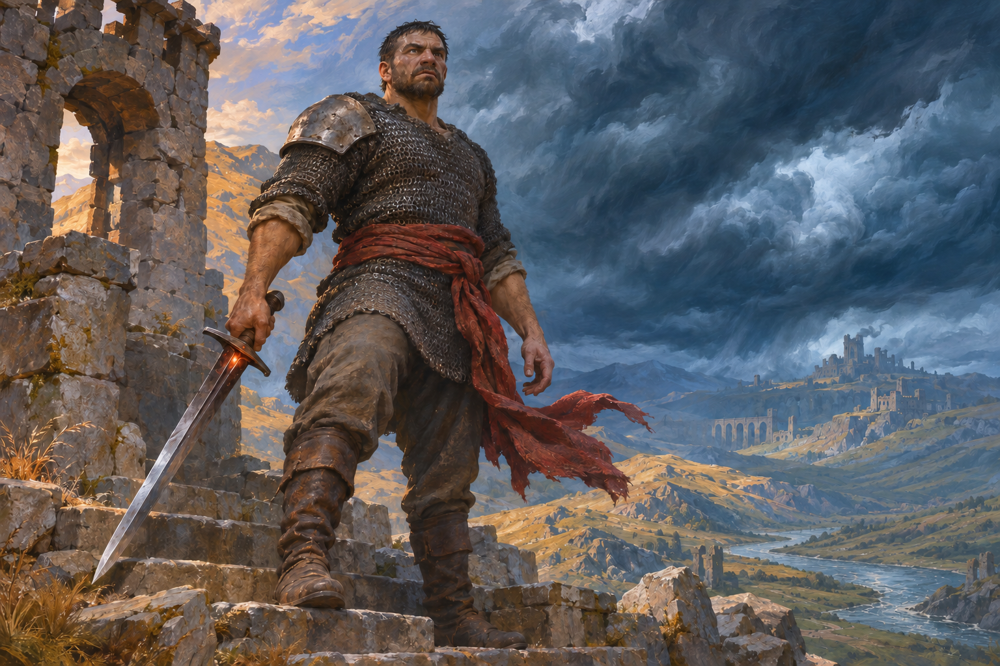
06 The Cinderline Veteran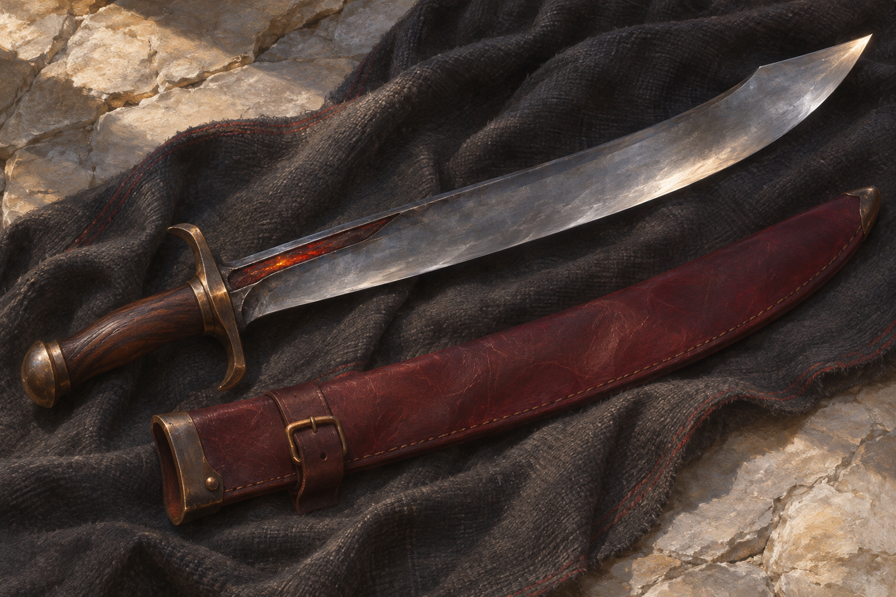
07 Redglass Falchion 08 The Weather at Her Elbow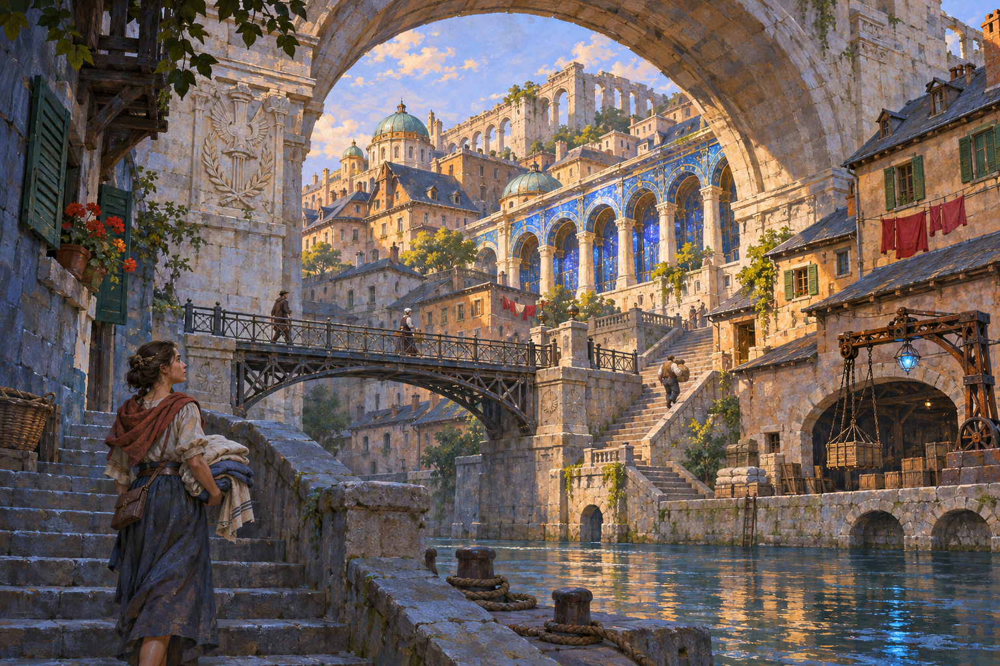
09 The Third Arch of Ambrel 10 The Unclaimed Saint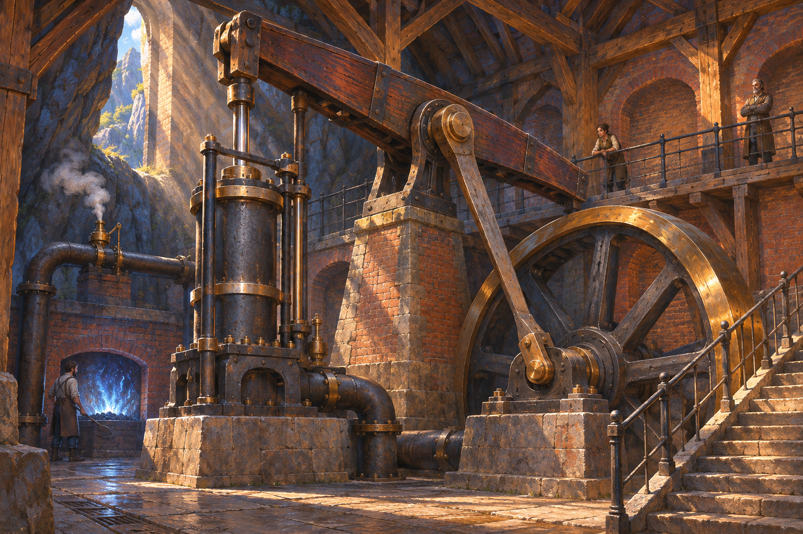
11 The Mountain’s Lung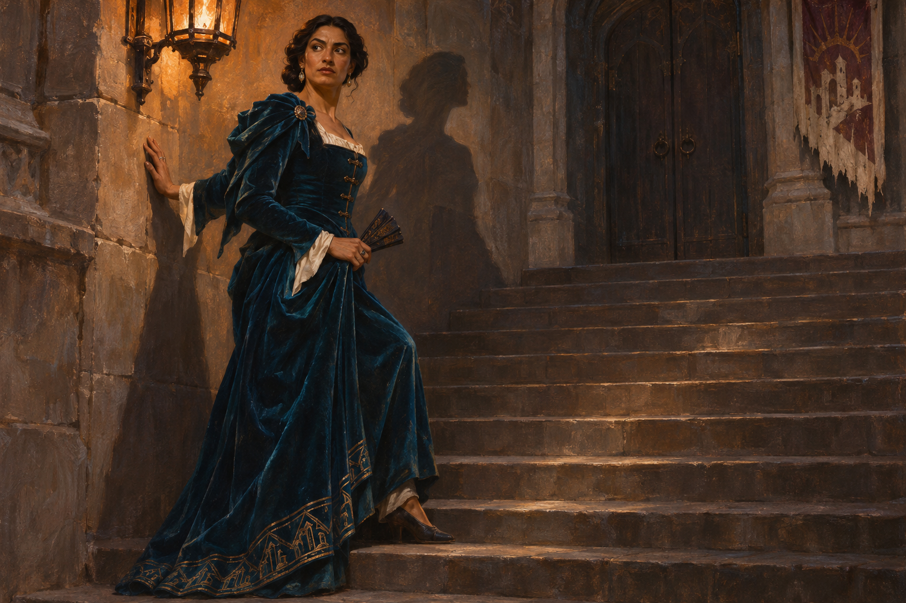
12 The Night Embassy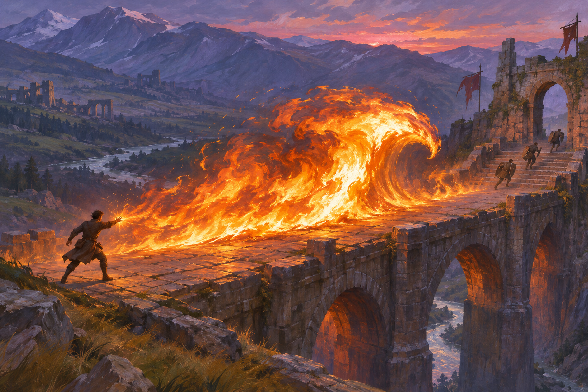
13 Cinderwake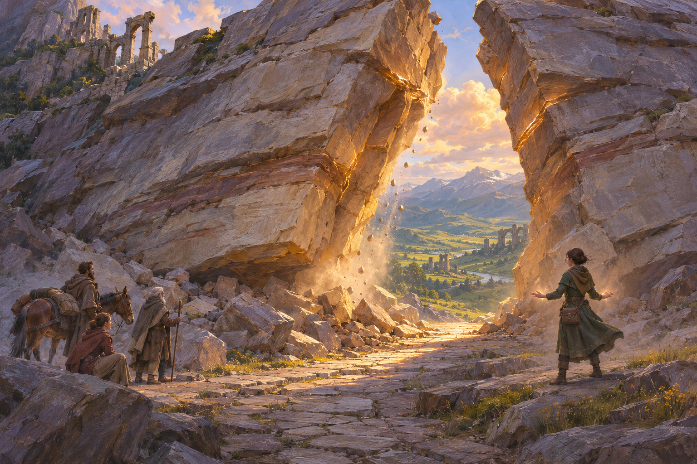
14 The Stone OpensClose fit
A new scene for the loved Ashwing keeper: intimate, slightly uncanny companionship rather than a spectacle of necromancy.
Close fit
Following the street goblin’s warmth and specificity: a practical specialist whose small magic belongs naturally to his trade.
Close fit
A larger Gnosis construct with the loved magical core, but a low, open mechanical body rather than a knight-shaped robot.
Close fit
Returning to a favourite creature at a smaller, intimate scale: warmth, believable anatomy and a proposed glimpse of its nesting life.
Close fit
Vigil magic expressed through care and human presence, with the quiet emotional weight of the healer and Rite of Stillness.
Close fit
A forceful male Fervor fighter with simple, individually chosen kit; the sword carries a contained ember rather than an oversized effect.
Close fit
An equipment study built around the material appeal of the rapier and enamel kit: a usable steel weapon with one unusual magical inclusion.
Close fit
Personal magic without a device: an ordinary scholar treating a small weather spell as part of everyday life.
Close fit
Building out the larger city you liked: impressive accumulated construction, with magic and ordinary life sharing the same place.
Experiment · sacred high fantasy
Testing a rarer, more numinous edge: a possible Velunn encounter, with presence and light doing the work rather than an effects display.
Experiment · industrial scale
Pushing craft beyond small automatons: a great stationary steam installation, with magic contributing heat without replacing its machinery.
Creator review: worst of the bunch. Not selected; retained outside the reference library.
Experiment · courtly uncanny
One deliberately glamorous character in the batch, testing richer court dress and a quiet supernatural wrongness at Dominion’s edge.
Close fit · powerful magic
A direct response to the Cinderfall reminder: a great moving mass of fire, tiny figures for scale and hot light carving through a cool landscape.
Close fit · powerful magic
A second large spell with a different language: mass, fracture and mineral light, drawing on the quarry singer and Unmake the Pattern.